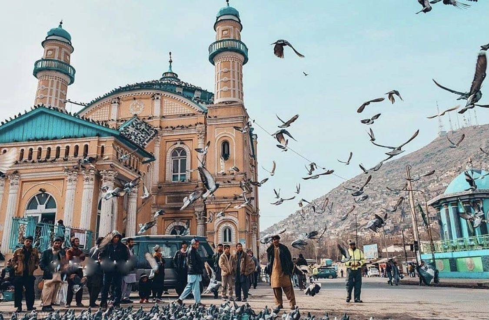
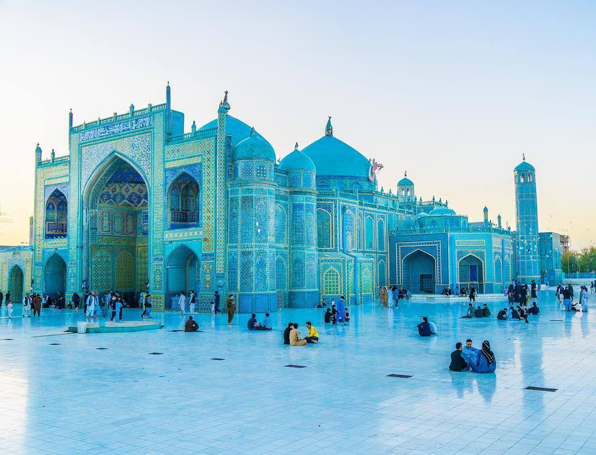
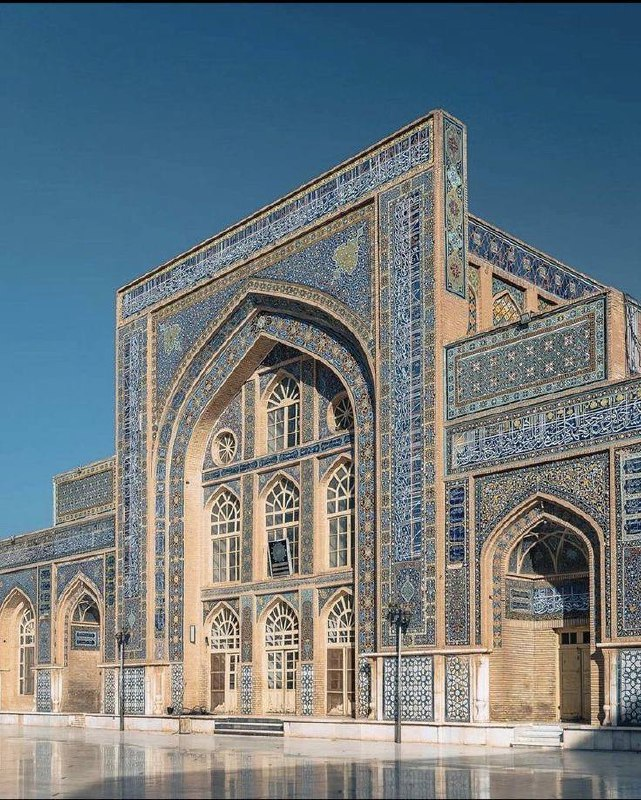

Kabul – پایتخت تاریخ و هنر
Kabul is the capital city and cultural heart of Afghanistan.

- Famous place: Bagh-e Babur
- Traditional dish: Kabuli Pulao
-
Clothing: Colorful shawls & embroidered coats
-
Art: Poetry, calligraphy, and miniature paintings
Mazar-i-Sharif – شهر نور و آرامش
Known for the majestic Blue Mosque and Nowruz celebrations.

- Famous place: Shrine of Ali (Blue Mosque)
-
Festival: Janda Bala (flag raising ceremony)
- Dress: Colorful dresses with embroidery
-
Culture: Strong poetic and spiritual heritage
Herat – شهر شعر و هنر
City of poets, painters, and ancient Islamic architecture in western
Afghanistan.

-
Historic Site: Herat Friday Mosque (Masjid Jame)
-
Clothing: Colorful scarves & traditional gowns
- Food: Mantu & Herati Palaw
-
Culture: Persian poetry and miniature painting